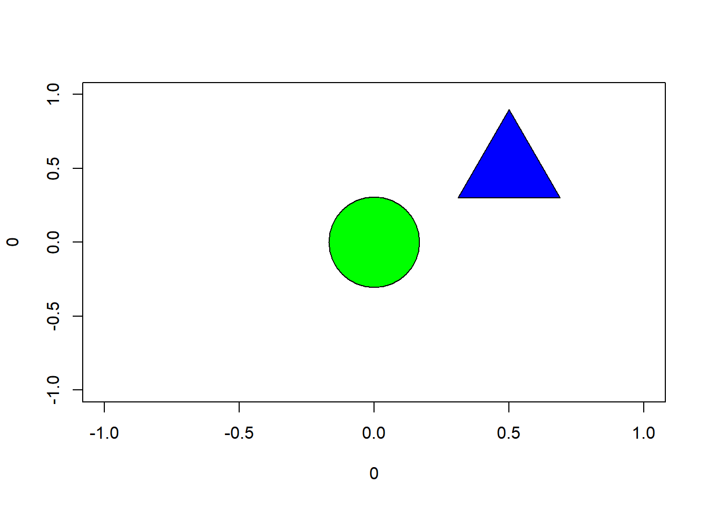
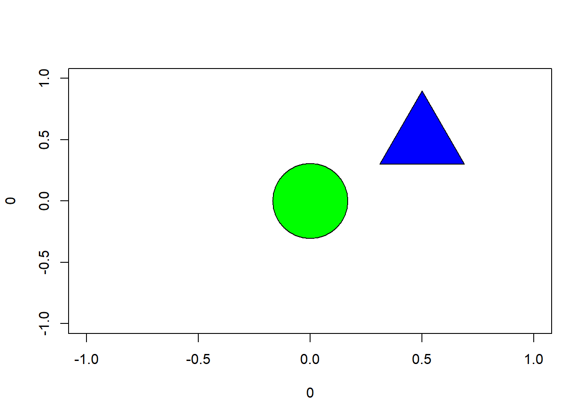

plot(0, 0, cex = 12, pch=21, bg = "green")
points(0.5, 0.5, cex = 10, pch = 24, bg = "blue")
Hi! My name is Zeynep Yagmur Guner. I have graduated from Bogazici University Mathematics department, and currently working on my masters degree at MEF University, Big Data Analytics program. After I finished my undergraduate education, I started working in risk and strategy analytics departments in banking industry. Currently I am working as a consultant at Carbon Consulting. My job is to provide analysis to the departments for their decision making process. With this course I am planning to learn how to make these analyses using R and I want to be able to make more complex analyses.
My LinkedIn profile is here.
In this post, the author shows how we can use the ggplot2 package for visualization. The article starts from examples of constructing simple shapes like circle, triangle etc., moves on to coloring then combines these information to make a target point. Here these target points are used to explain the concepts of accuracy and precision. It is important how we present the results of our analysis we mostly use tools such as tables and graphs for this. We see in this post we can also visualize a concept we are trying to explain using R. Here is a basic example using the material from the post. Using pch, we choose the symbol we are going to use and cex is used for scaling of the symbol. These are used in graphs, to change the symbol or scale of that shows the points in the graph. Here it is used to create shapes. For example, here pch=21 gives us a filled circle which we can change the fill color using bg. Detailed information on these can be found on this link.
plot(0, 0, cex = 12, pch=21, bg = "green")
points(0.5, 0.5, cex = 10, pch = 24, bg = "blue")
This post shows us that there is more than one way to achieve our goal in R. Here we can see the examples of different packages for making frequency tables. Each one have different features so we can choose which one to use considering how we want to see the results. For example the following tables shows the groups in the first column rather than the first row, and shows the percents. It also considers the missing data. In tabyl there is another group for missing data and in tab1 results are shown with or without missing data.
Other packages and their frequency tables are discussed with both their advantages and disadvanteges in the post are;
This post talks about what k-means clustering is and how it is applied in R. Here author defines K-means clustering as K-means clustering partitions a group of observations into a fixed number of clusters that have been initially specified based on their similar characteristics. To use k-means clustering we have to define k, the number of clusters, initial guess of cluster positions which will be calculated again and a distance metric. This post uses a data example of 10 points to explain the process so it is easy to understand the logic behind the k-means clustering. We can summarize the basic idea of process using the example given in the post as follows: First we choose k, the number of clusters. In the example it is possible to see in the plot of the data that we will have 3 clusters. In more complex problems there are methods used to determine the number of clusters, one of them is given in the post later, the elbow-point technique. After we determine the number of clusters we choose 3 initial points for our clusters. For each point, the distance between the initial points is measured, and the data point is assigned to the closest initial point. After that process is completed, the clusters elements are determined. Then the mean of each cluster is calculated and the initial points chosen for clusters are assigned to these points. The parts that determine the clusters and cluster points will be calculated repeatedly until the position of the clusters no longer change. The packages used for this analysis are ggplot2, dplyr and ggfortify. While calculating the means of clusters, kmeans function is used.